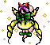
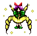

- Welcome to Touhou Wiki!
- Please register to edit. For assistance, check in with our Discord server or IRC channel.
Rengeteki
| The title of this article is unofficial; an official name hasn't been found, so it's been given a fitting title by the editors of this wiki for amenity, either from a popular fan-name or a mere description of the topic. If an official name appears, then it should be moved to the official name. |
|
 Sprite of Rengeteki in Lotus Land Story (Left) and in Mystic Square (Right)
| |
| Species | |
|---|---|
| Location | |
Appearances | |
| Official Games | |
| |
Rengeteki is some kind of humanoid creature that's thought to be a fairy who attacks the heroines twice on stage 4 of Lotus Land Story and what appears to be the same character on stage 3 of Mystic Square. In the former game, she appears in Mugenkan when Reimu Hakurei or Marisa Kirisame enter the mansion and attacks. She re-appears again later for a rematch, using the same techniques of danmaku.
However, she re-appears in the latter game as soon as the heroine (including Mima and Yuuka Kazami) enters Makai and attacks them there. Once she's finished with firing her danmaku, she'll fade into the background and come back a second later directly above the player and shoot more bullets, but can only be defeated once. Since she's got no dialogue with the player on both games, nothing is known about her.
Background Information[edit]
Like any other PC-98 midboss, this character has no name. However, a western fan has given her the nickname Rengeteki (蓮華的) that suppose to mean "Like the Lotus Flower", but it wasn't popular and thus rarely used due to its terrible translation because it more accurately means "Lotus flower-like" and that it was thought as a "forced fan-name". However, it kept strong in the Western fanbase and thus is in notable use today. It may also be referred to as the "LLS 4th Stage Midboss" (幻想郷四面中ボス) or the "MS 3rd Stage Midboss" (怪綺談三面中ボス). Japanese fans may also call this character "Photon" (光子 Koushi).
The sprite of her in Lotus Land Story shows that she has short purple hair, a yellow dress with a bow, green shoes, a big green bow on dress, and has very light transparent wings that might be attached to her arms. She has a pink hat with a long ribbon attached to it and has yellow sparkles around her. Her sprite in Mystic Square is just as same as Lotus Land Story's, but her hat with a long ribbon is now gone.
Additional Information[edit]
- She is noted for being the only nameless character in the Touhou Project to appear in more than one game. Daiyousei is excluded since her name have been used by ZUN as a term.
- She may have some kind of relationship with Yuuka Kazami due to being in Mugenkan. However, she's seen in Makai attacking Yuuka, which makes this possible relationship ambiguous.
Fandom[edit]
Official Sources[edit]
- 1998/08/14 Lotus Land Story – Stage 4
- 1998/12/30 Mystic Square – Stage 3
| This page is part of Project Characters, a Touhou Wiki project that aims to write proper descriptions for all official characters of Touhou Project. Please keep the character page guidelines in mind when contributing. |